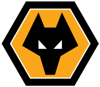
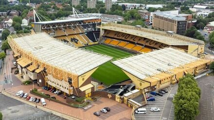

Treinador: Rod Edwards
Rob Edwards é um treinador galês que assumiu o comando do Wolverhampton em novembro de 2025, sucedendo a Vítor Pereira. Com experiência acumulada em clubes como Forest Green Rovers, Watford, Luton Town e Middlesbrough, destaca-se pela sua capacidade de desenvolver projetos sólidos e pela ligação histórica ao Wolves, onde jogou entre 2004 e 2008.

Estádio: Molineux Stadium
O Wolverhampton joga no histórico Molineux Stadium, inaugurado em 1889 e com capacidade para cerca de 32 mil espectadores. É um dos palcos mais tradicionais do futebol inglês.

Estilo de Jogo:
O estilo de jogo do treinador Rob Edwards é caracterizado por um futebol agressivo, dinâmico e de ataque, com ênfase na alta intensidade e transições rápidas.
"Out of Darkness Cometh Light!"